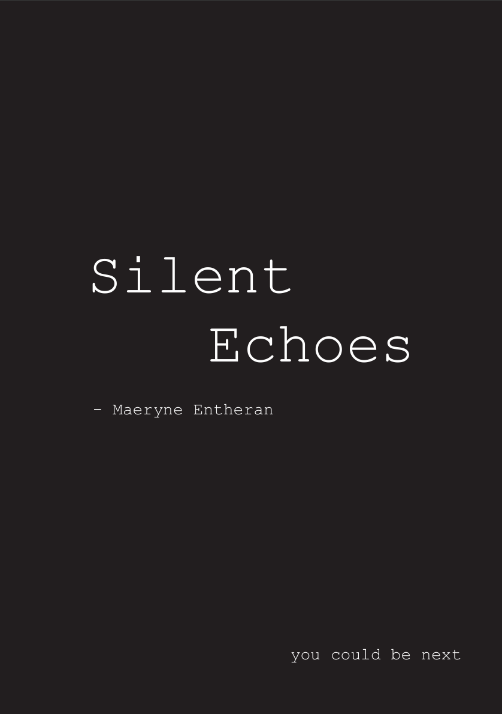
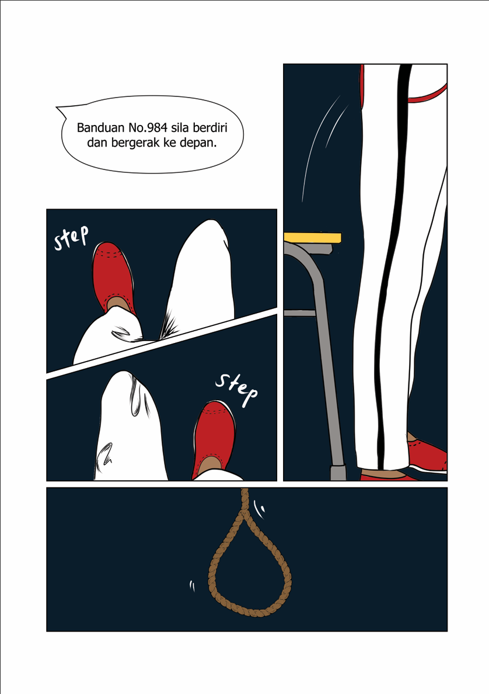
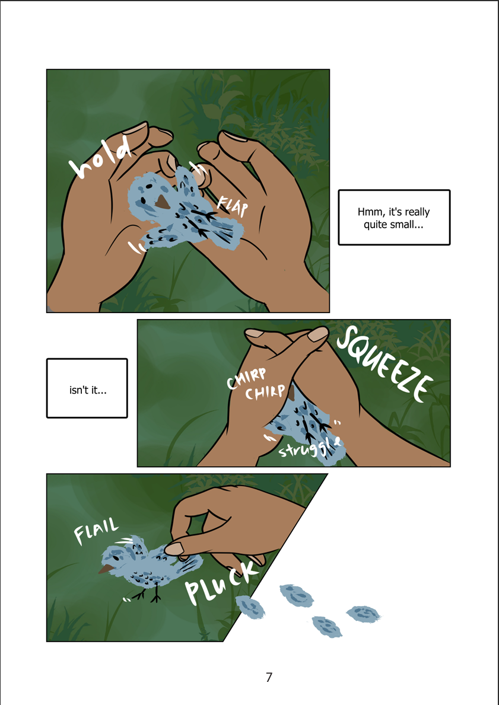
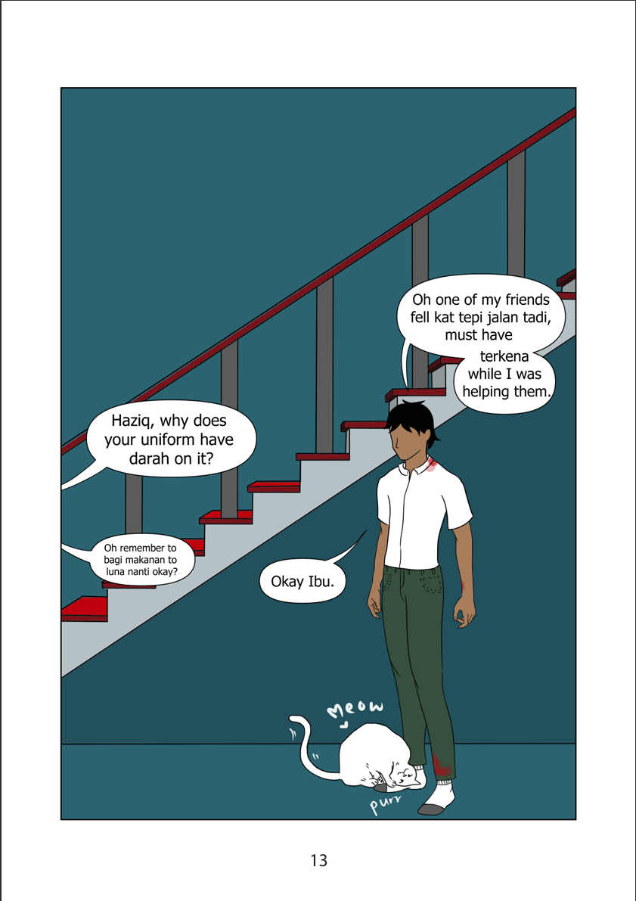

Being passionate about animal welfare, I started looking into the topic and discovered that there was a connection between animal cruelty and serial killers due to the lack of empathy. Going along this research direction, I wanted to raise awareness on early indicators of potential dangerous psychopathy as well as to talk about the psychological effect on children after witnessing cruelty to animals and how they are more at risk of escalating the trauma.
The end project is a short illustrated comic strip that tells the story of Haziq as he progresses through his cruel tendencies.


